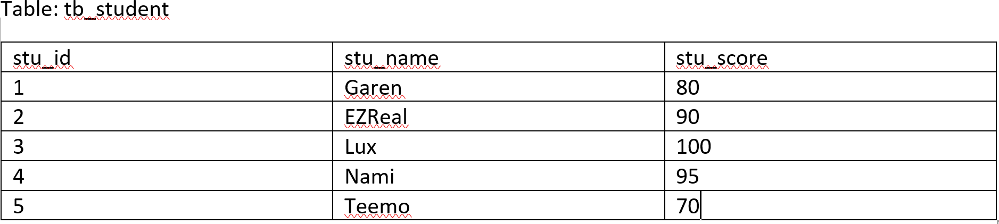
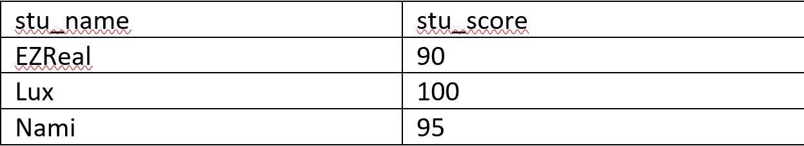
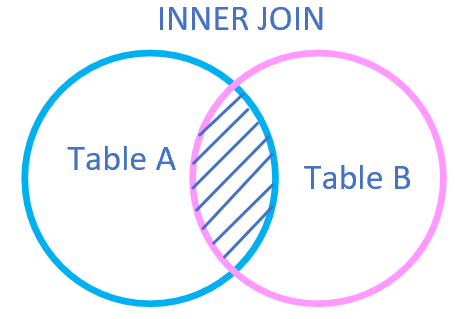
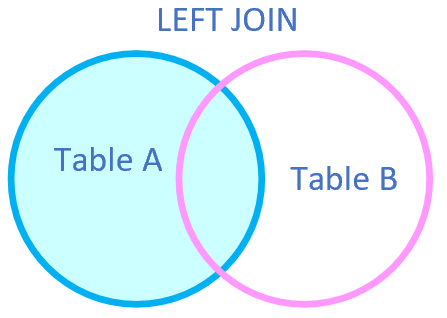
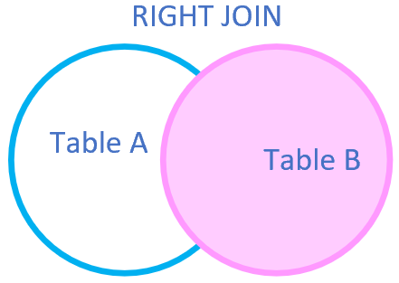
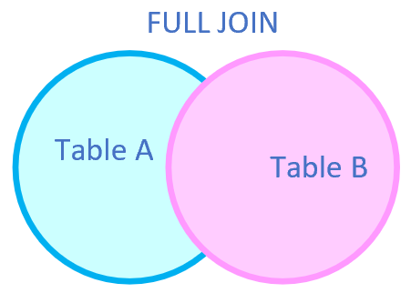

SQL
Structured Query Language (SQL) is a standard Database language which is used to create, maintain and retrieve the ralational database. It is very useful in handling structured data where there are relations between different entities/variables of the data.
1. What is Relational Database
Definition of RDB from Wikipedia: A relational database is a digital database based on relational model of data. A software system used to maintain relational databases is a relational database management system (RDBMS). Virtually all relational database systems use SQL (Structured Query Language) for querying and maintaining the database.
Definition of Relational Model from Wikipedia: This model organizes data into one or more tables of columns and rows, with a unique key identifying each row. Rows are also called recodes (tuples). Columns are also called attributes. Generally, each table/relation represents one "entity type". The rows represent instances of that type of entity and the columns representing values attributed to that instance.
Therefore, relational database means the data is stored as well as retrieved in the form of relations (tables).
2. Important terminologies
- Keys: Each row in a table has its own unique key. Rows in a table can be linked to rows in other tables by adding a column for the unique key of the linked row (known as foreign key). Most physical implementations have a unique primary key (PK) for each row in a table. It is the key that the system is uses primarily for accessing the table.
- superkey: a set of attributes of a relation schema upon which all attributes of the schema are functionally dependent. No two rows can have the same value of super key attributes.
- candidate key: minimal superkey.
- primary key: one of the candidate keys. One of the candidate keys is selected as most important and becomes the primary key. There cannot be more than one pk in a table.
- foreign key: a field (or collectiosn of fields) in one table that uniquely identifies a row of another table.
- Attributes: properties that define a relation.
- Tuple: each row in the relation.
- Degree: the number of attributes in the relation.
- Cardinality: the number of tuples in a relation.
- Column: the set of values for a particular attribute.
3. Queries of RDB
- Data Definition Langurage (DDL): It is used to define the structure of the database. E.g. CREATE, ALTER, DROP and RENAME
- CREATE: create databases or its objects (like table).
- DROP: delete objects from the database.
- ALTER: alter the structure of the database.
- RENAME: rename an object existing in the database.
- Data Manipulation Langurage (DML): It is used to manipulate data in the relations. E.g. INSERT, UPDATE, DELETE
- Data Query Langurage (DQL): It is used to extract the data from the relations. E.g. INSERT, UPDATE, DELETE
- Data Control Langurage (DCL): includs commands such as GRANT, REVOKE which mainly deals with the rights and other controls of the database system.
- GRANT: gives user’s access privileges to database.
- REVOKE: withdraw use’s access privileges give by using the GRANT command.
- Transctional Control Language (TCL): TCL commands deals with the transction within the database.
- COMMIT: commits a transaction.
- ROLLBACK: rollbacks a transaction in case of any error occurs.
4. SELECT Statements & Some clauses
4.1 SELECT Statement
A generic query to retrieve from a RDB is:
SELECT [DISTINCT] attribute_List FROM R1, R2,...RM
[WHERE condition]
[GROUP BY (attributes)][HAVING condition]
[ORDER BY (attributes)][DESC]
[LIMIT] limit_number;4.2 Aggregation functions
Aggregation functions: used to perform mathematical operations on data values of a relation. Some of the commonly used ones in SQL are:
- COUNT: count the number of rows in a relation. e.g.
SELECT COUNT (stu_phone) FROM tb_student; - SUM: add the values of an attribute in a relation. e.g.
SELECT SUM (stu_age) FROM tb_student; - MAX, MIN, AVG
4.3 GROUP BY clause
GROUP BY clause: arrange identical data into groups with the help of some functions. Key points:
- GROUP BY is used with the SELECT statement;
- Placed after the WHERE clause;
- Placed before ORDER BY clause if used any.
Syntax:
SELECT column1, function_name(column2)
FROM table_name
WHERE condition
GROUP BY column1, column2
ORDER BY column1, column2;
fuction_name: Name of the function used, e.g. SUM(), AVG().Example:
- GROUP BY single column: place all the rows with the same value of only a particular column in one group. E.g.
SELECT employee_name, SUM(SALARY) FROM tb_employee GROUP BY employee_name; - GROUP BY multiple columns: place all the rows with the same values of all columns in one group. E.g.
SELECT stu_subject, stu_year, COUNT(*) FROM tb_student GROUP BY stu_subject, stu_year;
4.4 HAVING clause
HAVING clause: place conditions to decide which group will be the part of final result-set.
Difference between HAVING and WHERE clause
HAVING is used to specify a condition for a group or an aggregate function used in SELELCT statement. The WHERE clause selects before grouping. The HAVING clause selects rows after grouping. Unlike HAVING clause, the WHERE clause cannot contain aggregate functions. E.g.
SELECT employee_name, SUM(employee_salary) FROM tb_employee
GROUP BY employee_name
HAVING employee_salary >= 3000;
SELECT stu_subject, stu_year, COUNT(*) AS c FROM tb_student
GROUP BY stu_subject, stu_year
HAVING c BETWEEN 1 AND 3;4.5 LIMIT clause
If there are a large number of tuples satisfying the query conditions, it might be resourceful to view only a handful of them at a time. Key Point of LIMIT clause:
- LIMIT clause is used to set an upper bound limit on the number of tuples returned by SQL.
- Not supported by all SQL versions
- Can be specified using the SQL 2008 OFFSET/FETCH/FIRST clauses.
Example:
SELECT * FROM tb_student
LIMIT 5;
SELECT ALL FROM tb_student
ORDER BY stu_id
LIMIT 5;4.6 ORDER BY clause
The ORDER BY in SQL is used to sort the fetched data in either ascending or descending according to one or more columns.
- By default ORDER BY sorts the data in ascending order.
- User keyword DESC to sort the data in descending order.
- Can sort according to either one column or multiple columns.
Example:
SELECT * FROM table_name ORDER BY column_name ASC|DESC;
SELECT * FROM table_name ORDER BY column1 ASC|DESC, column2 ASC|DESC;4.6 DISTINCT clause
DISTINCT clause is used in conjunction with SELECT keyword. It is helpful when there is need of avoiding the duplicate values in any specific columns/table. When using it, only the unique values are fetched.
Example:
SELECT DISTINCT stu_name FROM tb_student;
/* To fetch unique combination of rows from the whole table */
SELECT DISTINCT * FROM tb_student;4.7 WHERE clause
WHERE is used for fetching filtered data in a result set. E.g.
SELECT column1, column2 FROM table_name
WHERE column_name operator value;Operator includes: >, >=, <, <=, =, <>, BETWEEN (in an inclusive range), LIKE (search for a pattern), IN (specify multiple possible values for a column). E.g.
SELECT * FROM tb_student WHERE stu_age=20;
SELECT * FROM tb_student WHERE stu_id BETWEEN 1 AND 3;
/*
% : Used to match zero or more characters. (Variable Length)
_ : Used to match exactly one character. (Fixed Length)
*/
/* fetch records of students where NAME starts with letter S */
SELECT * FROM tb_student WHERE stu_name LIKE 'S%';
/* fetch records of students where NAME contains the patter ‘AM’
*/
SELECT * FROM tb_student WHERE stu_name LIKE '%AM%';
SELECT * FROM tb_student WHERE stu_age IN (18, 20);
SELECT * FROM tb_student WHERE stu_id IN (1,4);4.7 EXISTS keyword
EXISTS contition in SQL is used to check whether the result of a correlated nested query is empty (contains no tuples) or not. The result of EXIST is a boolean value True or False. It can be used in a SELECT, UPDATE, DELETE or INSERT statment.
Syntax
SELECT column_name(s)
FROM table_name
WHERE EXISTS
(SELECT column_name(s)
FROM table_name
WHERE condition);Example:
/*with SELECT statment*/
SELECT fname, lname
FROM tb_customers
WHERE EXISTS
(SELECT * FROM tb_orders
WHERE tb_customers.customer_id = tb_orders.c_id);
/*Using NOT with EXISTS*/
SELECT lname, fname
FROM tb_customers
WHERE NOT EXISTS
(SELECT * FROM tb_orders
WHERE tb_customers.customer_id = tb_orders.c_id);
/*with DELETE statment*/
DELETE
FROM tb_orders
WHERE EXISTS
(SELECT * FROM tb_customers
WHERE tb_customers.customer_id = tb_orders.c_id
AND Customers.lname = 'EZReal');
/*with UPDATE statment*/
UPDATE tb_customers
SET lname = 'Lux'
WHERE EXISTS (SELECT * FROM tb_customers WHERE customer_id = 401);4.8 WITH keyword
WITH clause allows you to give a sub-query block a name, which can be referenced in several places within the main SQL query.
Syntax
WITH tb_temp (ave_val) as
(SELECT AVG(attr1) FROM table),
SELECT attr1 FROM table
WHERE table.attr1 > tb_temp.ave_val;For example, the tables are shown as follows. Find all the student whose score is more than the average score of all employees.

SQL Query:
WITH tb_temp (ave_score) AS
(SELECT AVG(stu_score) FROM tb_student)
SELECT stu_name, stu_score FROM tb_student
WHERE tb_student.stu_score > tb_temp.ave_score;Result will be:

4.9 JOIN statement
JOIN statement is used to combine rows from two or more tables based on a common field between them. Different types of Joins are:
- INNER JOIN: selects all rows from the tables as long as the condition satisfies. 
Syntax:
SELECT tb1.col1, tb1.col2, tb2.col1,...
FROM tb1
INNER JOIN tb2
ON tb1.matching_col = tb2.matching_col;- LEFT JOIN (LEFT OUTER JOIN): returns all the rows of the table on the left side of the JOIN and matching rows for the tables on the right side of JOIN. The rows for which there is no matching row on right side, the result-set will contain NULL.
Syntax:
SELECT tb1.col1, tb1.col2, tb2.col1,...
FROM tb1
LEFT JOIN tb2
ON tb1.matching_col = tb2.matching_col;- RIGHT JOIN (RIGHT OUTER JOIN): returns all the rows of the table on the right side of the JOIN and matching rows for the table on the left side of JOIN. The rows for which there is no matching row on the left, the result-set will contain NULL.
Syntax:
SELECT tb1.col1, tb1.col2, tb2.col1,...
FROM tb1
RIGHT JOIN tb2
ON tb1.matching_col = tb2.matching_col;- FULL JOIN: creates the result-set by combining result of both LEFT JOIN and RIGHT JOIN. The result-set will contain all the rows from both the tables. The rows for which there is no matching, the result-set will contain NULL values
Syntax:
SELECT tb1.col1, tb1.col2, tb2.col1,...
FROM tb1
FULL JOIN tb2
ON tb1.matching_col = tb2.matching_col;5. DDL Statements
- Crate DB:
CREATE DATABASE dbname; - Drop DB:
DROP DTABASE dbname; - Create Table
CREATE TABLE table_name ( column1 datatype, column2 datatype, ... );
/create table using another table/
CREATE TABLE new_table_name AS
SELECT column1, column2,…
FROM existing_table_name
WHERE condition;
- **<font color="MEDIUMTURQUOISE">DROP Table</font>**
``` sql
DROP TABLE table_name;- ALTER Table
/*add column*/ ALTER TABLE table_name ADD (column_name_1 datatype, column_name_2 datatype);
/drop column/
ALTER TABLE table_name
DROP COLUMN column_name;
/modify column/
ALTER TABLE table_name
MODIFY COLUMN column_name datatype;
/rename table name/
ALTER TABLE table_name
RENAME TO new_table_name;
/rename column name/
ALTER TABLE table_name
RENAME|CHANGE COLUMN old_name TO new_name;
- **<font color="MEDIUMTURQUOISE">Constraints</font>**: includes **NOT NULL**, **UNIQUE**, **PRIMARY KEY**, **FOREIGN KEY**, **CHECK**, **DEFAULT**, **INDEX**. E.g.
``` sql
CREATE TABLE `tb_product` (
/*NOT NULL, auto increment*/
`product_id` int(100) NOT NULL AUTO_INCREMENT,
`product_name` varchar(100) NOT NULL,
/*Default*/
`product_desc` varchar(2000) DEFAULT NULL,
`shop_id` int(20) NOT NULL DEFAULT '0',
/*Unique in MySQL*/
CONSTRAINT `uc_id_name` UNIQUE (`product_id`, `product_name`),
/*or we can write it as*/
UNIQUE (`product_name`),
/*primary key*/
PRIMARY KEY (`product_id`),
/*PK in MySQL*/
CONSTRAINT `pk_product` PRIMARY KEY (`product_id`),
/*FK in MySQL*/
FOREIGN KEY(`shop_id`) REFERENCES `tb_shop`(`shop_id`),
/*or */
KEY `fk_product_shop` (`shop_id`),
CONSTRAINT `fk_product_shop` FOREIGN KEY `shop_id` REFERENCES `tb_shop`(`shop_id`)
);
/*Add PK constraint*/
ALTER TABLE `tb_shop`
ADD CONSTRAINT `pk_shop` PRIMARY KEY (`shop_id`);
/*or*/
ALTER TABLE `tb_shop`
ADD PRIMARY KEY (`shop_id`);
/*Add Unique constraint*/
ALTER TABLE `tb_shop`
ADD UNIQUE INDEX `product_shop_unique` (`shop_id` ASC);6. DML Statements
6.1 UPDATE
Syntax:
UPDATE tb_name SET column1 = value1, column2 = value2,...
WHERE condition;6.2 DELETE
Syntax:
DELETE FROM tb_name WHERE condition;
/*delete all*/
DELETE FROM tb_name;
/*or*/
DELETE * FROM tb_name;6.3 INSERT
Syntax:
INSERT INTO tb_name VALUES (value1, value2, value3, ...);
INSERT INTO tb_name (column1, column2, column3,...)
VALUES (value1, value2, value3,...);
/* using SELECT in INSERT INTO Statement*/
INSERT INTO table_1 SELECT * FROM table_2 WHERE condition;
INSERT INTO table_1 (t1_column1) SELECT t2_column1 FROM table_2;